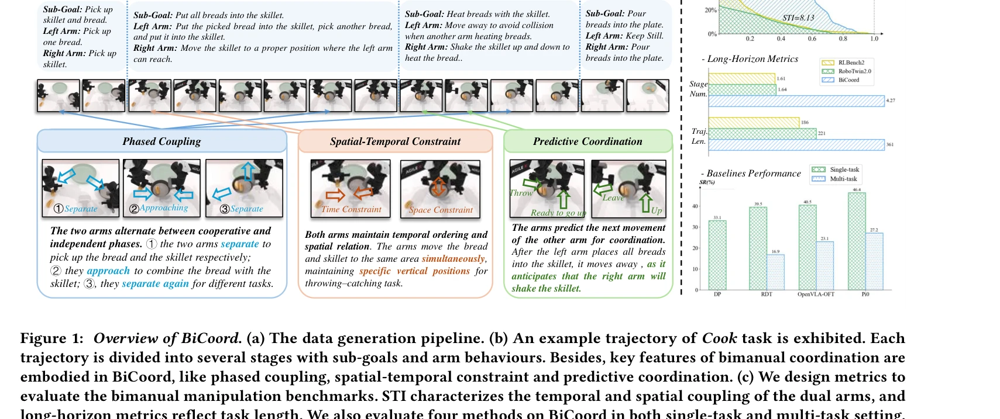
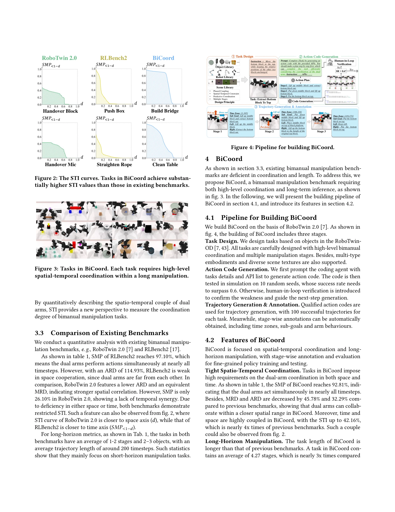

저자: | 날짜: 2026-04-07 | URL: https://arxiv.org/abs/2604.05831

Figure 1: Overview of BiCoord. (a) The data generation pipeline. (b) An example trajectory of Cook task is exhibited. Ea
BiCoord는 장시간의 연속적 양팔 의존성과 동적 역할 교환이 필요한 협응 양팔 조작 벤치마크를 제안하며, 시간적·공간적·복합 협응 메트릭을 개발하여 기존 정책들의 한계를 노출한다.
Figure 1: Overview of BiCoord. (a) The data generation pipeline. (b) An example trajectory of Cook task is exhibited. Ea

Figure 4: Pipeline for building BiCoord.
총평: BiCoord는 양팔 로봇 조작 분야에서 중요한 공백을 채우는 잘 설계된 벤치마크로, 장시간 지평선과 긴밀한 협응이라는 현실적 요구를 반영하며 정량화된 메트릭을 통해 향후 연구의 명확한 방향을 제시한다.